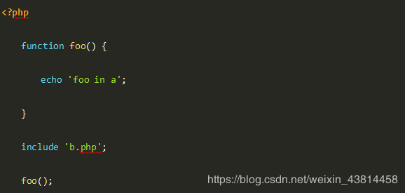
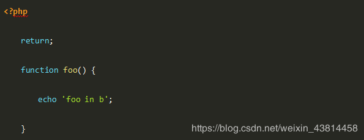
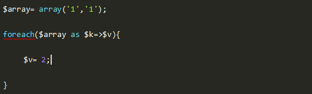

一、单选题（共29题，每题5分）
1.以下代码 a.php 输出的结果是？
a.php 的代码如下：

b.php的代码如下：

A、foo in a
B、什么也不输出
C、报错
D、foo in b
参考答案：C
答案解析：
答案是C 想让大家思考的是、为什么在b里边使用了return、依然可以找到foo函数的定义、并且报错 Cannot redeclare foo() ? 因为php是在运行之前先解释执行、为避免表述不精确、附上文档原文：Note that because PHP processes the file before running it, any functions defined in an included file will still be available, even if the file is not executed.
2.php中单引号和双引号包含字符串的区别正确的是？
A、单引号速度快，双引号速度慢
B、双引号速度快，单引号速度慢
C、单引号里面可以解析转义字符
D、双引号里面可以解析变量
参考答案：D
答案解析：在PHP定义字符串的时候，单引号和双引号没有速度差别，但是单引号中的字符全部是原样输出，而双引号可以解析变量和转义字符。
3.在SQL语言中，子查询是？
A、选取单表中字段子集的查询语句
B、选取多表中字段子集的查询语句
C、返回单表中数据子集的查询语言
D、嵌入到另一个查询语句之中的查询语句
参考答案：D
答案解析：嵌套SELECT语句也叫子查询，一个 SELECT 语句的查询结果能够作为另一个语句的输入值。子查询不但能够出现在Where子句中，也能够出现在from子句中，作为一个临时表使用，也能够出现在select list中，作为一个字段值来返回。
4.mb_作为前缀的函数作用是？
A、按照字节获取长度
B、按照字符获取长度
C、按照厘米获取长度
D、按照公分获取长度
参考答案：B
答案解析：按照字符获取长度。
5.PHP的垃圾收集机制，说法错误的是？
A、PHP使用的回收算法是引用计数法，每个php变量存在一个叫"zval"的变量容器中。
B、一个zval变量容器，除了包含变量的类型和值，还包括两个字节的额外信息。第一个是"is_ref"，是个bool值，用来标识这个变量是否是属于引用集合(reference set)。 第二个额外字节是"refcount"，用以表示指向这个zval变量容器的变量(也称符号即symbol)个数。
C、把一个变量赋值给另一变量不会增加引用次数(refcount) 当任何关联到某个变量容器的变量离开它的作用域(比如：函数执行结束)，或者对变量调用了函数 unset()时，"refcount"就会减1
D、变量容器在"refcount"变成0时就被销毁
参考答案：C
答案解析：把一个变量赋值给另一变量将增加引用次数(refcount)。
6.以下哪种病毒是通过操作系统漏洞传播的
A、QQ尾巴
B、传奇杀手
C、性感烤鸡
D、冲击波
参考答案：D
答案解析：暂无
7.假设某网站www.exploit.com存在文件上传漏洞，php语言编写，...
假设某网站www.exploit.com存在文件上传漏洞，php语言编写，根目录是C:\wwwroot，现构造文件名test.php上传到服务器目录C:\wwwroot\upload下，内容为，
请问下面的哪条url能够在服务器成功执行whoami命令？
A、http://www.exploit.com/upload/test.php?cmd=system('whoami');
B、http://www.exploit.com/test.php?cmd=system('whoami');
C、http://www.exploit.com/upload/test.php?cmd=whoami
D、http://www.exploit.com/upload/test.php?eval=system('whoami');
参考答案：A
8.关于数据库的读写分离，假设某数据库的工作负载为20%的写，80%的读，并有如下的前提： 1）读和写查询消耗同样的资源。 2）所有的服务器的配置相同。 3）可以把所有的读操作全都转移到从库。 那么如果一个服务器每秒可以支持1000的查询，那么需要增加多少从库才能将负载增加到2000？
A、1台
B、2台
C、3台
D、4台
参考答案：C
答案解析：此问题关键点在于增加的从库也是需要承担写操作的，因为需要通过binlog完成同步。所以每增加一台从库实际是只能承担600的读操作，因为留出400的写操作。那么2000的负载中有1600的写操作，需要3台才能完全消耗。
9.下面那个不是mysql存储引擎的锁类型？
A、表锁
B、页锁
C、行锁
D、无
参考答案：B
答案解析：mysql中myisam是有表锁，innodb是行锁，基于索引加锁，如果where条件没有索引，是所有行加锁；sql server才有页锁。
10.php中关于字符串处理函数以下说法正确的是？
A、implode( )方法可以将字符串拆解为数组
B、str_replace()可以替换指定位置的字符串
C、substr( )可以截取字符串
D、strlen( )不能取到字符串的长度
参考答案：C
答案解析：implode()方法是将数组连接为字符串，explode()方法是将字符串拆解为数组 str\_replace()是用指定字符替换原字符串中的某些字符，替换指定位置字符串的方法是 substr\_replace() substr()可以截取字符串，如果截取中文字符串可以用mb\_substr() 获取字符串长度的方法为strlen() 综上，C选项是正确的
很多人在刚接触这个行业的时候或者是在遇到瓶颈期的时候，总会遇到一些问题，比如学了一段时间感觉没有方向感，不知道该从那里入手去学习，对此我整理了一些资料，需要的可以免费分享给大家（11年架构师带你解读年薪50万面试通关秘籍。）
如果喜欢我的文章，想与一群资深开发者一起交流学习的话，获取更多相关大厂面试咨询和指导，欢迎加入我的学习交流群点击此处PHP高级交流
11.在 bash 中, 在一条命令后加入 "1>&2" 意味着？
A、标准错误输出重定向到标准输入
B、标准输入重定向到标准错误输出
C、标准输出重定向到标准错误输出
D、标准输出重定向到标准输入
参考答案：C
答案解析：Linux 中有三个系统文件描述符： 0：标准输入； 1：标准输出； 2：标准错误输出。
12.下面的脚本运行以后，$array数组所包含的值是什么？

A、array (‘2’ , ‘2’)
B、array (‘1’ , ‘1’)
C、array (2 , 2)
D、array (Null , Null)
13.以下不是PHP文件操作函数是？
A、file
B、fopen
C、fread
D、strcoll
14.在PHP面向对象中有一个通用方法__toString()方法，下面关于此方法描述或定义错误的是（ ）：
A、此方法是在直接输出对象引用时自动调用的方法。
B、如果对象中没有定义此方法时，直接使用echo输出此对象，会报如下错误：Catchable fatal error: Object of class A could not be converted to string.
C、此方法中一定要有一个字符串作为返回值。
D、此方法用于输出信息的，如下所示：public function __toString( ){ echo "This is Class ....";}
15.与 HTTP1.0 相比，HTTP1.1 的优点不包括（ ）
A、减少了 RTTs 数量
B、支持持久连接
C、减少了 TCP 慢启动次数
D、提高了安全性
16.关于mysql的说法，下面那个是错误的
A、数据库实列才是用来真正操作数据库文件的
B、一个数据库可以对应多个实列
C、数据库是物理操作系统文件或其他形式文件类型的集合
D、数据库实列由数据库后台进程/线程及一个共享内存区组成
17.以下awk用法描述正确的是？
awk '{a[$1,"/t", $2] += $4} END {for (uin in a) printf("%s/t%d/n", uin, a[uin]) }' test
A、可以处理字符格式数据
B、可以处理三维数组逻辑
C、可以处理json格式数据
D、可以处理二维数组数据
18.以下inode不包含的是？
A、文件的读写权限
B、文件的位置
C、当前目录下的文件数
D、文件的时间戳
参考答案：C
答案解析：inode中存的是该文件种的信息，包含文件的字节数，uid和gid，读写执行权限，时间戳ctime、mtime、atime，链接数：有多少个文件名指向这个inode，文件数据block位置
19.php中处理xml，说法错误的是？
A、可以使用DOMDocument加载
B、SimpleXML扩展提供了一个非常直观的API，更容易将XML转换成对象和遍历元素。建议使用SimpleXML加载非常大的XML文件
C、SimpleXML和DOM扩展是属于基于树的解析器，把整个文档存储为树的数据结构中，需要把整个文档都加载到内存中才能工作，所以当处理大型XML文档的时候，性能会剧减
D、XMLReader是一个XML解析器，它通过在加载过程中遍历每个节点，在而不是在内存中加载整个文档
20.PHP单例模式使用场景描述错误的是？
A、一个应用中会存在大量的数据库操作，比如过数据库句柄来连接数据库这一行为, 是典型的单例模式
B、如果系统中需要有一个类来全局控制某些配置信息, 那么使用单例模式可以很方便的实现
C、需要curd时使用单例模式可以提高执行效率
D、Web配置项读取使用单例模式意义不大
参考答案：D
答案解析：由于web配置项属于共享资源，所以使用单例模式可以提高执行效率
21.关于Laravel路由，错误的是？
A、所有的 Laravel 路由都在 routes 目录中的路由文件中定义
B、web 中间件组，没有提供会话状态和 CSRF 保护
C、大多数的应用构建，都是以在 routes/web.php 文件定义路由开始的
D、routes/web.php 文件用于定义 web 界面的路由
参考答案：B
答案解析： 所有的 Laravel 路由都在 routes 目录中的路由文件中定义 routes/web.php 文件用于定义 web 界面的路由 大多数的应用构建，都是以在 routes/web.php 文件定义路由开始的
22.若文件存在，则用file()函数打开文件返回的数据类型是？
A、数组
B、字符串
C、整型
D、根据文件类型来定
参考答案：A
答案解析：file() 将文件作为一个数组返回。数组中的每个单元都是文件中相应的一行，包括换行符在内。如果失败，则返回 false。
23支持子程序调用的数据结构是
A、队列
B、二叉树
C、树
D、栈
参考答案：D
答案解析：栈用于支持子程序调用综上，正确答案为D。
24.是PHP魔术方法的是？
A、__function
B、__to
C、__line
D、__invoke
参考答案：D
答案解析：
__construct __destruct __call __callStatic __get __set __isset __clone __unset __sleep __wakeup __toString __invoke __set_state
25.用某排序方法对一元素序列进行非递减排序时，若该方法可保证在排序前后排序码相同者的相对位置不变，则称该排序方法是稳定的。简单选择排序法排序方法是不稳定的，（61）可以说明这个性质。
A、21 48 21* 63 17
B、17 21 21* 48 63
C、 63 21 48 21* 17
D、21* 17 48 63 21
26.属于awk GNU版本的是？
A、awk
B、gawk
C、nawk
D、ngawk
参考答案：B
答案解析：gawk为awk的gnu版本
27.以下关于PHP字符串说法错误的是？
A、PHP字符串二进制安全的
B、PHP字符串最大为2G
C、PHP字符串可以被序列化
D、PHP字符串可以使用\0来结束
28.PHP常量和常量类理解错误的是？
A、常量在定义的时候就需要赋值，在运行过程中就无法修改值
B、常量使用的时候需要引用
C、在类的内部可以用类名来访问自身的常量
D、const 关键字定义常量必须处于最顶端的作用区域
29.Apache与Nginx大访问下性能描述正确的是？
A、Apache所采用的epoll网络I/O模型非常高效
B、Nginx使用了最新的kqueue和select网络I/O模型
C、Apache进程执行PHP、输出HTML都得干，占用的资源多
D、nginx不可以做反向代理服务器
二、多选题（共1题，每题5分）
1如果需要开发一个标准 php 的扩展，必须包含那些文件?
A、config.m4
B、config.w32
C、php_counter.h
D、counter.c
E、package.xml
参考答案：A,B,C,D
答案解析：参考：PHP扩展开发--编写一个helloWorld扩展
https://www.cnblogs.com/boystar/p/6904795.htmlhttp...